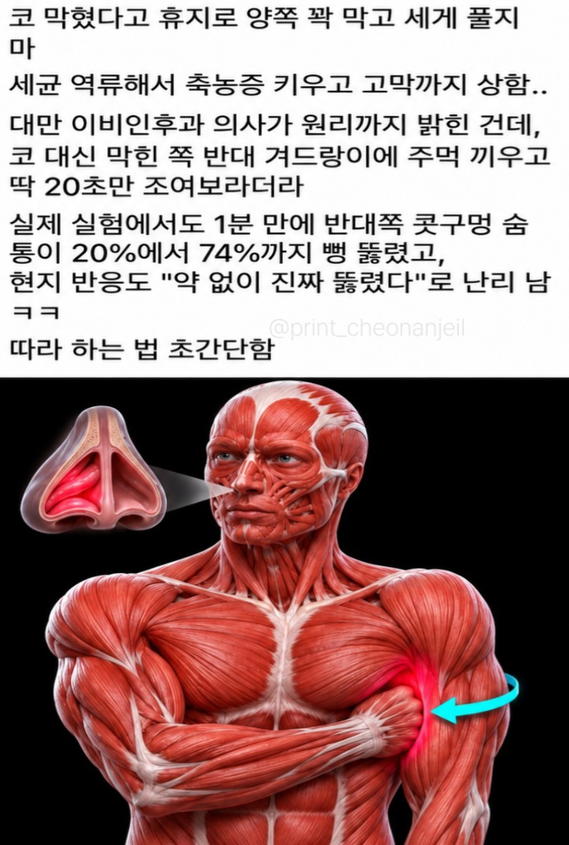
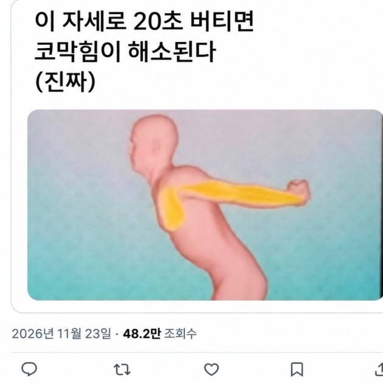

https://cafe.daum.net/ssaumjil/LnOm/3385828?svc=cafeapi


https://cafe.daum.net/ssaumjil/LnOm/3385828?svc=cafeapi


안되잖아
당한겁니다
치한 하다가 걸려서 제압 당하는 자세하면 코가 풀린다고?
코막힘 - 가늘게 만 휴지로 코 간지럽혀서 재채기하면 대부분 뚫림.
되는지 안 되는지, 피드백 기다림.
안되네요...
오 진짜 됨. 근데 주먹 빼니까 다시 막힘
30대인데 저자세 하고 팔에 쥐었다 ㅠㅠ
일단 본문에 '~난리남' 써있으면 거르는게 정답임
코막힘은 콧물보단 코 안쪽 부어서 생기는 요인이 크고
혈류량으로 일시적 해결이 가능
누웠을때 상대적으로 머리쪽으로 피가 몰려서 붓기 쉽고
코막힘도 심해지는데
일어나면 그게 일시적으로 해결되니 코가 뚫리는듯한 느낌을 받음
근육 이완 수축으로도 혈류량이 굉장히 영향을 많이 받는데
그 방법 중 코에 직접 스트레스 가하지않고 간접적으로 하는게
본문에 소개된 방법인가봄
잠을 잘못 자서 목이 아플땐... 어깨 빙빙 돌리는 운동을 하면 금방 낫는 것과 같은 원리구나
비염 친구들아 이비인후과가서 국소스테로이드 분무제 처방 받고 정기로 뿌려라…진짜 수면의 질이 달라진다 ㄹㅇ
그거 2주는 뿌려야 효과있다그래서 귀찮던데
사실 2주 수준이 아님 걍 봄 가을엔 계절 내내 계속 뿌려야 함
대신 그렇게 하면 수면질? 아니 걍 삶의질이 수직상승함
진짜 삶의 질이 다름. 불편한 곳 하나가 편해지면 그 전으로 다시는 돌아가기 싫음…
보통 10일 정도 뒤에 효과가 슬슬 나타나고 주기적으로 뿌려줘야 됨.
근데 하루 한 번 뿌리는 걸로 코가 진짜 너무너무 편하다면? 안 뿌릴 이유가 없지.
오트리빈 같은 건 절대 뿌리면 안되더라
가서 뭐라 해야돼
코막혀요 하면 매크로1 발동하고 분무제 처방전 줘?
나 같은 경우 코 막혀서 병원 찾아가니까 먼저 알려주셔서 알게됨.
코가 막히니 효과 나타나는 10일 전후까지는 먹는 약으로 조절하고 이후 효과 나타나면 약은 안 먹는 식으로 함.
일단 방문해서 내 현자 상태가 분무제 뿌려서 호전되는 적응증이 되는지 물어보면 될 듯.
나조넥스?
ㅇㅇ
삼전의 자세도 좋다
왜진짜임
자세가 이상해
좋아 이런거 안까먹게 캡처해야징
와 방금 진짜 뻥뚤림
비염맨들은 그냥 평생 뿌린다 생각하고 이비인후과 가서 스프레이 처방받으셈 매일 뿌리는거 좀 귀찮은데 걍 일반인의 삶을 느낄수 있음
또 속냐ㅋ
“스크랩하기“
와 미쳤다 이건 세기의 발견이네
이제 숨 안참아도 되겠다ㅎㅎ
코막힘 ㅇㄷ
오